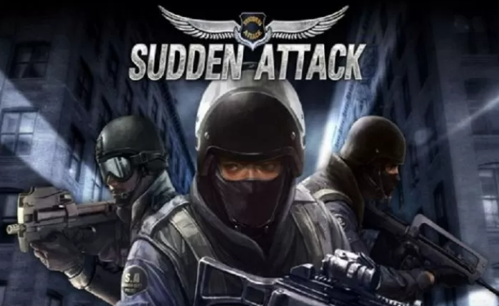

영희의 웹-html

(구)게임하이인 넥슨게임즈[4]에서 제작하고 넥슨에서 배급[5]하는 온라인 FPS 게임. 게임 제목 자체는 '기습공격'이라는 뜻이며[6] 이 게임 때문에 국내에서는 '서든'이라는 단어 자체가 이 게임을 명칭하는 용어나 다름없게 되었다.
2016년 7월엔 후속작인 서든어택 2가 발표되었지만 게임 내외적으로 논란이 많아서 출시 2개월 만인 2016년 9월 29일에 서비스가 종료되었다. 서든어택이 남긴 기록들(2015년 8월)
2019년 9월 25일 정오를 기점으로 서든어택의 마지막 해외 서버인 일본 서든어택이 서비스를 종료함에 따라, 일본 넥슨에는 더이상 FPS 게임이 존재하지 않는다.[7] 이제 전 세계에서 서든어택이 서비스 되는 중인 국가는 대한민국 뿐이다. 일본 서든어택 서비스 종료 공지 아카이브
2021년 2월 4일을 끝으로 서든어택의 네이버 채널링 서비스가 7년 만에 종료를 선언했다.